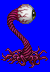
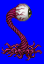
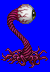
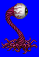

Height: Around 1 meter Weight: ???
Habitat: Cave, dungeon Origin: ???
Meaning: English words "Death Gaze"
Also called Gazer and Devil Eye, it is a huge eyeball monster. The eyeball forms the main body, but there are five auxiliary tentacles for defense. It is able to stun its target with a single gaze, after which it proceeds to drain the life force from its helpless victim.